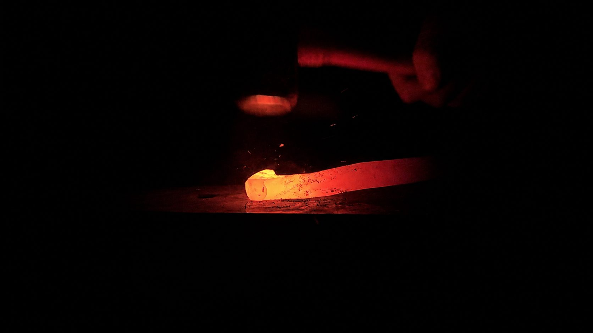

About
The forge and the hands

I'm a Muslim blacksmith based in California, inspired by the beauty, balance, and craftsmanship found throughout Allah's creation. My work is rooted in a deep appreciation for the natural world and for the traditional ways people have shaped, built, traveled, and lived in closer connection with the land.
Based between Sacramento and Huntington Beach, I hand-forge swords, knives, and other traditional tools through Hamza's Blades, combining functional craftsmanship with a respect for the methods and traditions that have shaped blacksmithing for generations.
For me, blacksmithing and the outdoors are filled with endless opportunities for reflection. There is something deeply grounding in working with fire, steel, wood, earth, the elements, and in recognizing that every material we shape ultimately comes from what Allah has created. Spending time in nature reminds us of His signs, His power, and the incredible detail and wisdom present throughout creation.
Through my work, I hope to encourage more Muslims to rediscover that connection. My goal is to help bridge the space between Islam, traditional craftsmanship, and the outdoors, while inspiring a deeper sense of gratitude, reflection, stewardship, and appreciation for the world Allah has entrusted to us.
If you want something made, tell me what you have in mind.
Send an inquiry